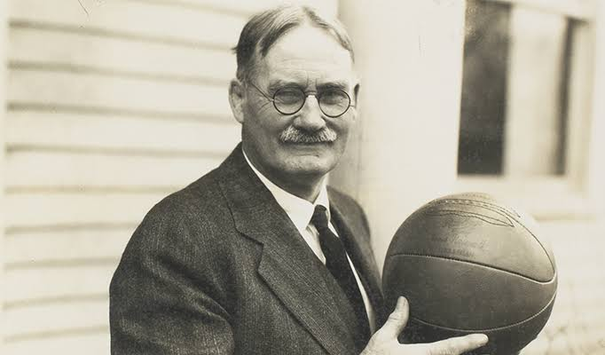
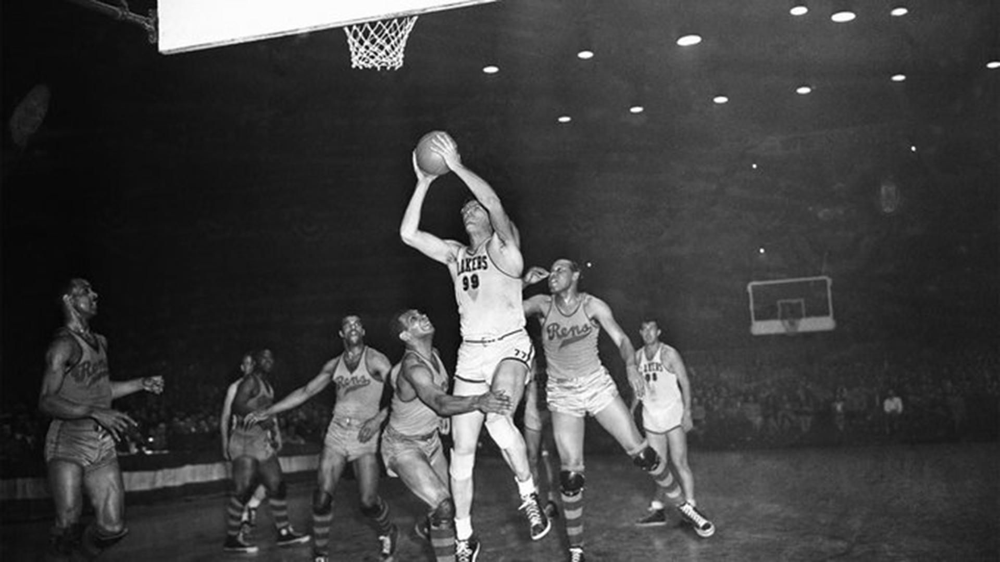
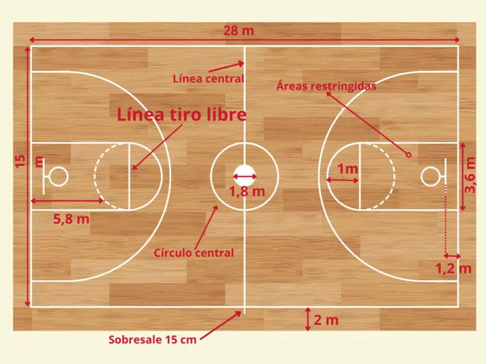
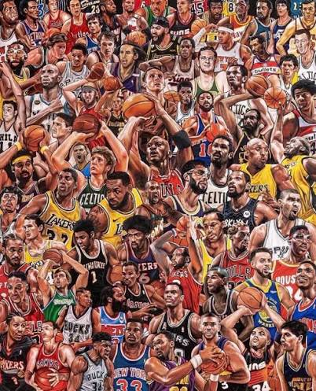

Historia, reglas y grandes momentos del baloncesto
El baloncesto fue inventado en diciembre de 1891 por el profesor canadiense James Naismith en Springfield, Massachusetts (EE.UU.). Buscaba un deporte de interior que mantuviera activos a sus alumnos durante el invierno. Originalmente se usaban cestas de melocotones y un balón de fútbol.
Con el tiempo el deporte se expandió por todo el mundo y se convirtió en olímpico en 1936. Hoy es uno de los deportes más populares del planeta.


El objetivo es anotar más puntos que el equipo rival introduciendo el balón en el aro contrario. Cada canasta vale 2 puntos (o 3 si se realiza desde fuera de la línea de triple). Los tiros libres valen 1 punto.
El partido se divide normalmente en 4 cuartos de 10 o 12 minutos. Existen faltas personales, técnicas y antideportivas. El reloj de posesión es de 24 segundos.

A lo largo de la historia han brillado jugadores legendarios como Michael Jordan, LeBron James, Kobe Bryant, Magic Johnson, Larry Bird y, en la actualidad, estrellas como Stephen Curry, Giannis Antetokounmpo y Luka Dončić.
Estas figuras no solo dominaron las canchas, sino que también popularizaron el deporte a nivel global.
